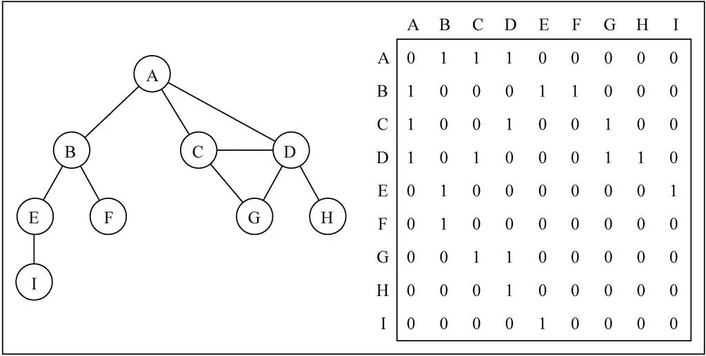
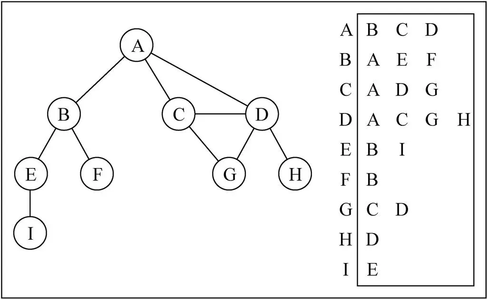

要点：图
一、图的概念
在计算机程序设计中，图也是一种非常常见的数据结构，图论其实是一个非常大的话题，在数学上起源于哥尼斯堡七桥问题。
1.1 什么是图？
图是一种与树有些相似的数据结构。
- 实际上，在数学的概念上，树是图的一种。
- 我们知道树可以用来模拟很多现实的数据结构，比如：家谱/公司组织架构等等。
那么图长什么样子呢？或者什么样的数据使用图来模拟更合适呢？
人与人之间的关系网
互联网中的网络关系
广州地铁图
那么，什么是图呢?
我们会发现，上面的结点（其实图中叫顶点 Vertex）之间的关系，是不能使用树来表示（几叉树都不可以）。
这个时候，我们就可以使用图来模拟它们。
1.2 图的特点
一组顶点：通常用 V (Vertex) 表示顶点的集合；
一组边：通常用 E (Edge) 表示边的集合；
边是顶点和顶点之间的连线；
边可以是有向的，也可以是无向的。（比如 A —- B，通常表示无向。 A —> B，通常表示有向）
1.3 图的术语
术语
我们在学习树的时候，树有很多的其他术语，了解这些术语有助于我们更深层次的理解图。
但是图的术语其实非常多，如果你找一本专门讲图的各个方面的书籍，会发现只是术语就可以占据一个章节。这里介绍几个比较常见的术语，某些术语后面用到的时候，再了解，没有用到的，不做赘述。
下面这是个抽象出来的图
顶点
表示图中的一个结点。
比如地铁站中某个站/多个村庄中的某个村庄/互联网中的某台主机/人际关系中的人。
边
边表示顶点和顶点之间的连线。
比如地铁站中两个站点之间的直接连线, 就是一个边。
注意：这里的边不要叫做路径，路径有其他的概念，后面会区分。
相邻顶点
由一条边连接在一起的顶点称为相邻顶点。
比如 0 - 1 是相邻的，0 - 3 是相邻的。0 - 2 是不相邻的。
度
一个顶点的度是相邻顶点的数量。
比如 0 顶点和其他两个顶点相连，0 顶点的度是 2
比如 1 顶点和其他四个顶点相连，1 顶点的度是 4
路径
路径是顶点 v1，v2…，vn 的一个连续序列, 比如上图中 0 1 5 9 就是一条路径。
- 简单路径: 简单路径要求不包含重复的顶点. 比如
0 1 5 9是一条简单路径。 - 回路：第一个顶点和最后一个顶点相同的路径称为回路。比如
0 1 5 6 3 0。
无向图
上面的图就是一张无向图，因为所有的边都没有方向。
比如 0 - 1 之间有变，那么说明这条边可以保证 0 -> 1，也可以保证 1 -> 0。
有向图
有向图表示的图中的边是有方向的。
比如 0 -> 1，不能保证一定可以 1 -> 0，要根据方向来定。
在无向图中，若任意两个顶点 i 与 j 都有路径相通，则称该无向图为连通图。
在有向图中，若任意两个顶点 i 与 j 都有路径相通，则称该有向图为强连通图。
生成树
一个连通图的生成树是指一个连通子图，它含有图中全部 n 个顶点，但只有足以构成一棵树的 n-1 条边。一颗有 n 个顶点的生成树有且仅有 n-1 条边，如果生成树中再添加一条边，则必定成环。在连通网的所有生成树中，所有边的代价和最小的生成树，称为最小生成树，其中代价和指的是所有边的权重和。
无权图和带权图
无权图
上面的图就是一张无权图（边没有携带权重）
上面的图中的边是没有任何意义的，不能说 0 - 1 的边，比 4 - 9 的边更远或者用的时间更长。
带权图
带权图表示边有一定的权重，这里的权重可以是任意你希望表示的数据：比如距离或者花费的时间或者票价。
我们来看一张有向和带权的图
1.4 现实建模
对交通流量建模：
顶点可以表示街道的十字路口，边可以表示街道；加权的边可以表示限速或者车道的数量或者街道的距离；建模人员可以用这个系统来判定最佳路线以及最可能堵车的街道。
对飞机航线建模：
航空公司可以用图来为其飞行系统建模；将每个机场看成顶点，将经过两个顶点的每条航线看作一条边；加权的边可以表示从一个机场到另一个机场的航班成本，或两个机场间的距离；建模人员可以利用这个系统有效的判断从一个城市到另一个城市的最小航行成本。
二、图的表示
我们知道一个图包含很多顶点，另外包含顶点和顶点之间的连线（边），这两个都是非常重要的图信息，因此都需要在程序中体现出来。
2.1 顶点表示
顶点的表示相对简单：
上面的顶点抽象成了 1 2 3 4，也可以抽象成 A B C D。在后面的案例中，我们使用 A B C D。
那么这些 A B C D 我们可以使用一个数组来存储起来(存储所有的顶点)。
当然，A B C D 有可能还表示其他含义的数据(比如村庄的名字)，这个时候，可以另外创建一个数组，用于存储对应的其他数据。
边的表示略微复杂：
因为边是两个顶点之间的关系，所以表示起来会稍微麻烦一些。
下面是边常见的表示方式。
2.2 邻接矩阵
概述
邻接矩阵让每个节点和一个整数向关联, 该整数作为数组的下标值；用一个二维数组来表示顶点之间的连接。
一般而言，用 graph[i][j] = 1 来表示 顶点 i 和顶点 j 之间有一条边，并且边的指向是从 i 到 j。用 graph[i][j] = 0 来表示 顶点 i 和顶点 j 之间不存在一条边。 对于有权图来说，我们可以存储其他数字，表示的是权重。
这种存储方式的空间复杂度为 O(n ^ 2)，其中 n 为顶点个数。如果是稀疏图（图的边的数目远小于顶点的数目），那么会很浪费空间。并且如果图是无向图，始终至少会有 50 % 的空间浪费。
演示：

图片解析
在二维数组中，0 表示没有连线，1 表示有连线。
通过二维数组，我们可以很快的找到一个顶点和哪些顶点有连线。（比如 A 顶点, 只需要 遍历第一行即可）
另外，A - A，B - B（也就是顶点到自己的连线），通常使用 0 表示。
邻接矩阵的优点
直观，简单。
判断两个顶点是否连接，获取入度和出度以及更新度数，时间复杂度都是 O(1)
邻接矩阵的问题
如果是一个无向图，邻接矩阵展示出来的二维数组，其实是一个对称图。
- 也就是 A -> D 是 1 的时候，对称的位置 D -> 1 一定也是 1。
- 那么这种情况下会造成空间的浪费，解决办法需自己去研究下。
邻接矩阵还有一个比较严重的问题就是如果图是一个稀疏图
- 那么矩阵中将存在大量的 0，这意味着我们浪费了计算机存储空间来表示根本不存在的边。
- 而且即使只有一个边，我们也必须遍历一行来找出这个边，也浪费很多时间。
2.3 邻接表
概述
邻接表由图中每个顶点以及和顶点相邻的顶点列表组成。
这个列表有很多中方式来存储：数组/链表/字典(哈希表)都可以。
演示

图片解析
其实图片比较容易理解
比如我们要表示和 A 顶点有关联的顶点（边），A 和 B/C/D 有边，那么我们可以通过 A 找到 对应的数组/链表/字典，再取出其中的内容就可以啦。
邻接表的问题
邻接表计算“出度”是比较简单的（出度：指向别人的数量； 入度: 指向自己的数量）
邻接表如果需要计算有向图的“入度”，那么是一件非常麻烦的事情。
它必须构造一个“逆邻接表”，才能有效的计算“入度”。而临街矩阵会非常简单。
三、图的封装
3.1 添加字典类和队列类
1 | // 字典结构的封装 |
3.2 创建图类
先来创建 Graph 类，定义了两个属性：
vertexes用于存储所有的顶点，使用一个数组来保存。adjListadj 是 adjoin 的缩写，邻接的意思。adjList 用于存储所有的边，这里采用邻接表的形式。
1 | class Graph { |
3.3 添加方法
添加顶点与边如图所示：
创建一个数组对象vertexes存储图的顶点；创建一个字典对象adjList存储图的边，其中key为顶点，value为存储key顶点相邻顶点的数组。
添加顶点：可以向图中添加一些顶点。
- 将添加的顶点放入到数组中。
- 另外，给该顶点创建一个数组
[]，该数组用于存储顶点连接的所有的边.（回顾邻接表的实现方式）
1 | // 添加顶点 |
添加边：可以指定顶点和顶点之间的边。
- 添加边需要传入两个顶点，因为边是两个顶点之间的边，边不可能单独存在。
- 根据顶点 v 取出对应的数组，将 w 加入到它的数组中。
- 根据顶点 w 取出对应的数组，将 v 加入到它的数组中。
- 因为这里实现的是无向图，所以边是可以双向的。
1 | // 添加边 |
转换为字符串输出
toString 方法：转换为邻接表形式。为了能够正确的显示图的结果，就是拿出二维数组的每一项。
1 | // 输出图结构 |
3.4 测试代码
1 | // 测试代码 |
四、图的遍历
和其他数据结构一样，需要通过某种算法来遍历图结构中每一个数据。这样可以保证，在我们需要时，通过这种算法来访问某个顶点的数据以及它对应的边。
4.1 遍历的方式
图的遍历思想
图的遍历思想与树的遍历思想一样，意味着需要将图中所有的顶点都访问一遍，并且不能有重复的访问（上面的toString方法会重复访问）；
遍历图的两种算法
- 广度优先搜索(Breadth-First Search, 简称 BFS)
- 深度优先搜索(Depth-First Search, 简称 DFS)
两种遍历算法，都需要明确指定第一个被访问的顶点。
遍历的注意点
完全探索一个顶点要求我们便查看该顶点的每一条边。
对于每一条所连接的没有被访问过的顶点，将其标注为被发现的，并将其加进待访问顶点列表中。
为了保证算法的效率：每个顶点至多访问两次。
两种算法的思想
- BFS 基于队列，入队列的顶点先被探索。
- DFS 基于栈，通过将顶点存入栈中，顶点是沿着路径被探索的，存在新的相邻顶点就去访问。
为了记录顶点是否被访问过，我们使用三种颜色来反应它们的状态。(或者两种颜色也可以)
- 白色表示该顶点还没有被访问.
- 灰色表示该顶点被访问过, 但并未被探索过.
- 黑色表示该顶点被访问过且被完全探索过.
初始化颜色代码
封装initializeColor方法将图中的所有顶点初始化为白色
1 | // 初始化顶点的颜色 |
4.2 广度优先搜索(BFS)
算法思路
广度优先算法会从指定的第一个顶点开始遍历图，先访问其所有的相邻点，就像一次访问图的一层。换句话说，就是先宽后深的访问顶点。
图解BFS
算法实现
基于队列可以简单地实现广度优先搜索算法：
- 首先创建一个队列Q（尾部进，首部出）；
- 调用封装的initializeColor方法将所有顶点初始化为白色；
- 指定第一个顶点A，将A标注为灰色（被访问过的节点），并将A放入队列Q中；
- 循环遍历队列中的元素，只要队列Q非空，就执行以下操作：
- 先将灰色的A从Q的首部取出；
- 取出A后，将A的所有未被访问过（白色）的相邻顶点依次从队列Q的尾部加入队列，并变为灰色。以此保证，灰色的相邻顶点不重复加入队列；
- A的全部相邻节点加入Q后，A变为黑色，在下一次循环中被移除Q外；
代码实现
1 | // 广度优先搜索 |
过程详解
下为指定的第一个顶点为A时的遍历过程：
- 如 a 图所示，将在字典edges中取出的与A相邻的且未被访问过的白色顶点B、C、D放入队列que中并变为灰色，随后将A变为黑色并移出队列；
- 接着，如图 b 所示，将在字典edges中取出的与B相邻的且未被访问过的白色顶点E、F放入队列que中并变为灰色，随后将B变为黑色并移出队列；
- 如 c 图所示，将在字典edges中取出的与C相邻的且未被访问过的白色顶点G（A，D也相邻不过已变为灰色，所以不加入队列）放入队列que中并变为灰色，随后将C变为黑色并移出队列；
- 接着，如图 d 所示，将在字典edges中取出的与D相邻的且未被访问过的白色顶点H放入队列que中并变为灰色，随后将D变为黑色并移出队列。
如此循环直到队列中元素为0，即所有顶点都变黑并移出队列后才停止，此时图中顶点已被全部遍历。
测试代码
1 | // 调用广度优先算法 |
可见，安装了广度优先搜索的顺序不重复地遍历了所有顶点。
4.3 深度优先搜索(DFS)
算法思路
- 深度优先搜索算法将会从第一个指定的顶点开始遍历图，，沿着一条路径遍历直到该路径的最后一个顶点都被访问过为止；
- 接着原路回退并探索下一条路径，即先深后宽地遍历图中的各个顶点
图解DFS

算法实现
广度优先搜索算法我们使用的是队列，这里可以使用栈完成，也可以使用递归。
方便代码书写，我们还是使用递归(递归本质上就是函数栈的调用)
基于递归实现深度优先搜索算法：定义dfs方法用于调用递归方法dfsVisit，定义dfsVisit方法用于递归访问图中的各个顶点。
在dfs方法中：
- 首先，调用initializeColor方法将所有顶点初始化为白色；
- 然后，调用dfsVisit方法遍历图的顶点；
在dfsVisit方法中：
- 首先，将传入的指定节点v标注为灰色；
- 接着，处理顶点V；
- 然后，访问V的相邻顶点；
- 最后，将顶点v标注为黑色；
代码实现
1 | // 深度优先搜索 |
过程详解
这里主要解释一下代码中的第3步操作：访问指定顶点的相邻顶点。
- 以指定顶点A为例，先从储存顶点及其对应相邻顶点的字典对象edges中取出由顶点A的相邻顶点组成的数组：
- 第一步：A顶点变为灰色，随后进入第一个for循环，遍历A白色的相邻顶点：B、C、D；在该for循环的第1次循环中（执行B），B顶点满足：colors == “white”，触发递归，重新调用该方法；
- 第二步：B顶点变为灰色，随后进入第二个for循环，遍历B白色的相邻顶点：E、F；在该for循环的第1次循环中（执行E），E顶点满足：colors == “white”，触发递归，重新调用该方法；
- 第三步：E顶点变为灰色，随后进入第三个for循环，遍历E白色的相邻顶点：I；在该for循环的第1次循环中（执行I），I顶点满足：colors == “white”，触发递归，重新调用该方法；
- 第四步：I顶点变为灰色，随后进入第四个for循环，由于顶点I的相邻顶点E不满足：colors == “white”，停止递归调用。过程如下图所示：
- 第五步：递归结束后一路向上返回，首先回到第三个for循环中继续执行其中的第2、3…次循环，每次循环的执行过程与上面的同理，直到递归再次结束后，再返回到第二个for循环中继续执行其中的第2、3…次循环….以此类推直到将图的所有顶点访问完为止。
下图为遍历图中各顶点的完整过程：
- 发现表示访问了该顶点，状态变为灰色；
- 探索表示既访问了该顶点，也访问了该顶点的全部相邻顶点，状态变为黑色；
- 由于在顶点变为灰色后就调用了处理函数handler，所以handler方法的输出顺序为发现顶点的顺序即：A、B、E、I、F、C、D、G、H 。
测试代码
1 | //测试代码 |
五、常见算法
图的题目的算法比较适合套模板。题目类型主要有：
- dijkstra
- floyd_warshall
- 最小生成树（Kruskal & Prim）
- A 星寻路算法
- 二分图（染色法）
- 拓扑排序
最短距离，最短路径
dijkstra 算法
DIJKSTRA 算法主要解决的是图中任意两点的最短距离。
算法的基本思想是贪心，每次都遍历所有邻居，并从中找到距离最小的，本质上是一种广度优先遍历。这里我们借助堆这种数据结构，使得可以在 $logN$ 的时间内找到 cost 最小的点。
1 | import heapq |
比如一个图是这样的：
1 | E -- 1 --> B -- 1 --> C -- 1 --> D -- 1 --> F |
我们使用邻接矩阵来构造：
1 | G = { "B": [["C", 1]], "C": [["D", 1]], "D": [["F", 1]], "E": [["B", 1], ["G", 2]], "F": [], "G": [["F", 1]],} |
会了这个算法模板， 你就可以去 AC 743. 网络延迟时间 了。
完整代码：
1 | class Solution: |
floyd_warshall 算法
floyd_warshall 也是解决两个点距离的算法，只不过由于其计算过程会把中间运算结果保存起来防止重复计算，因此其特别适合求图中任意两点的距离，比如力扣的 1462. 课程安排 IV。除了这个优点，还有一个非常重要的点是 floyd_warshall 算法由于使用了动态规划的思想而不是贪心，因此其可以处理负权重的情况。
floyd_warshall 的基本思想是动态规划。该算法的时间复杂度是 $O(N^3)$，空间复杂度是 $O(N^2)$，其中 N 为顶点个数。
算法也不难理解，简单来说就是： i 到 j 的最短路径 = i 到 k 的最短路径 + k 到 j 的最短路径的最小值。
算法的正确性不言而喻，因为从 i 到 j，要么直接到，要么经过图中的另外一个点 k。直接到的情况就是我们算法的临界值，而经过中间点的情况取出最小的，自然就是 i 到 j 的最短距离。。
Tips: Please indicate the source and original author when reprinting or quoting this article.